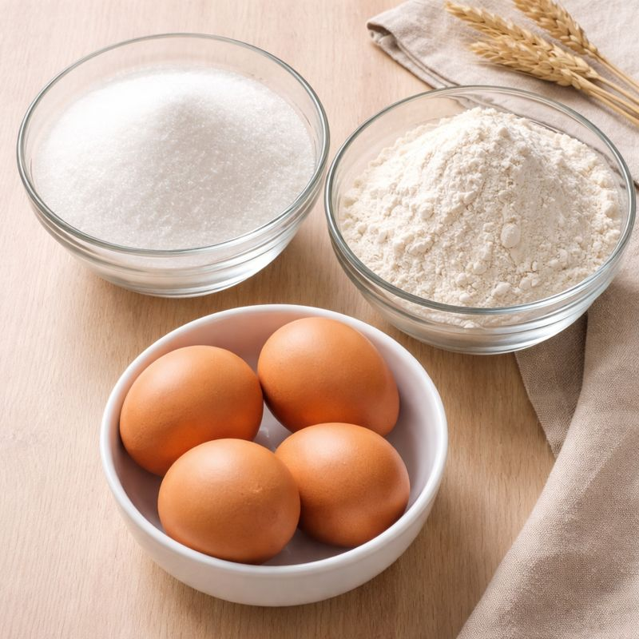
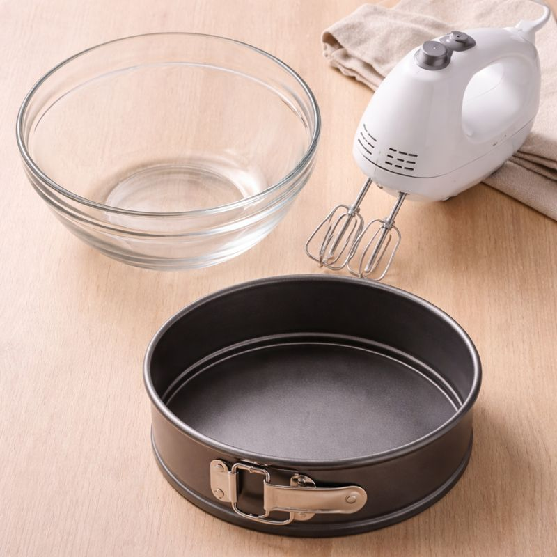
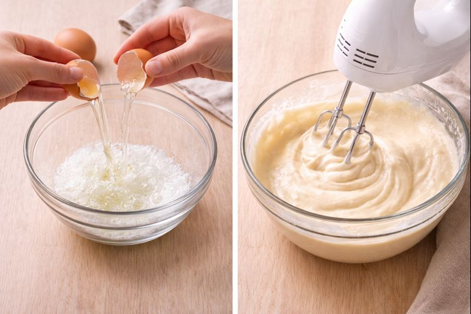
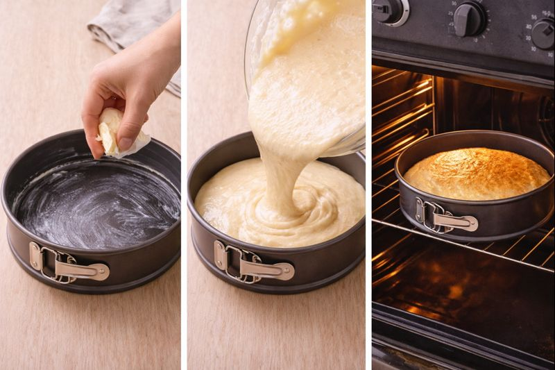

RECEPTA DE PASTÍS
PAS 1: Preparació dels ingredients
- Ous - 4 unitats
- Sucre - 300 grams
- Farina - 300 grams

PAS 2: Preparació del material
- Bol - 1 unitat
- Mixer - 1 unitat
- Motlle per enfornar - 1 unitat

PAS 3: Preparació de la massa
- Trenca els 4 ous i posa les clares dins del bol.
- Amb el mixer, bat-les fins que quedin clares i escumoses.
- Afegeix els 300 g de sucre.
- Ara bat la barreja fins que quedi una massa homogènia.
- Afegeix els rovells que havies separat abans.
- Bat la barreja fins que quedi clara i escumosa.
- Afegeix els 300 g de farina a poc a poc, mentre continues barrejant.
- Barreja suaument fins obtenir una massa homogènia, sense grumolls.

PAS 4: Forn
- Agafem el motlle per enfornar i l’engreixem amb mantega perquè el pastís no s’enganxi al motlle.
- La massa del pas 3 la col·loquem dins del motlle per enfornar.
- Col·loquem el motlle amb la massa dins del forn a 190-200 °C.
- Esperem que es cogui durant 20-25 minuts.

"Anar a activitats"